A minha experiência migratória
A viagem, a chegada, os primeiros passos num lugar novo.
Na Ubuntu Canarias acreditamos que cada história pode inspirar, aproximar culturas e ajudar a construir uma sociedade mais aberta e intercultural.

Vozes do Mundo · Testemunho recolhido pela equipa da Ubuntu Canarias

Na Ubuntu Canarias acreditamos que cada história pode inspirar, aproximar culturas e ajudar-nos a construir uma sociedade mais aberta e intercultural.
Hoje partilhamos um testemunho recolhido pela equipa da Ubuntu Canarias: o de uma mulher idosa, cubana, em situação de sem-abrigo, que conhecemos por acaso numa estação de autocarros.
Uma conversa inesperada
Tínhamos passado o dia todo na rua, a partilhar informação sobre a Ubuntu e a fazer diferentes diligências. Ao final do dia estava cansada e só queria voltar a casa. Mas perdi o autocarro.
Sentei-me a esperar pelo seguinte na estação de autocarros. Ao meu lado estava uma mulher mais velha que comia tranquilamente um pudim, e começou a falar comigo. Não sabia então que aquela conversa iria acompanhar-me muito depois de o meu autocarro chegar.
Vamos chamar-lhe María Elena. Não lhe perguntei a idade, não queria transformar aquela conversa num interrogatório, mas pelo seu aspeto e pelo que me foi contando, devia ter pelo menos 68 anos.
É cubana. Contou-me que há algum tempo vivia na própria estação, partilhando espaço com outras mulheres que também estavam em situação de sem-abrigo e com quem tinha tido problemas e desentendimentos. Mas a sua história não tinha começado ali.
Uma vida construída com trabalho
María Elena tinha trabalhado durante anos como empregada doméstica interna. Tinha trabalhado, poupado e construído a sua vida com esforço. Contou-me que tinha estudos, e repetia-o com uma mistura de orgulho e necessidade de ser reconhecida: «Achas que eu não tenho estudos?». As filhas eram engenheiras e arquitetas.
A sua vida, no entanto, tinha dado uma volta inesperada. Durante a pandemia teve de permanecer em Cuba, e quando finalmente pôde regressar, muitas coisas tinham mudado. O que tinha sido a sua vida quotidiana já não estava ali da mesma forma.
Em algum momento encontrou acolhimento num recurso público para pessoas sem-abrigo, mas depois de um desentendimento com as pessoas que geriam ou utilizavam aquele recurso, deixou de poder permanecer ali. E acabou na estação.
«Eu tenho o meu dinheiro»
María Elena explicou-me que recebia uma pensão, que tinha rendimentos e que, em princípio, esse dinheiro podia permitir-lhe alugar um quarto. Comentei que talvez a Ubuntu Canarias pudesse ajudá-la a procurar um quarto num bairro mais económico, ou acompanhá-la nas diligências que precisasse.
Ela disse que não. Não quis. E naquele «não» havia algo que me chamou especialmente a atenção: não parecia simplesmente uma recusa, parecia haver algo mais profundo por detrás.
Contou-me que comprava a sua própria comida, que cuidava de si mesma, que ia aos balneários públicos. Estava perfeitamente cuidada e tratava do seu aspeto. Tinha dinheiro para as suas necessidades básicas. E, no entanto, dormia numa estação de autocarros.
Uma perda demasiado grande
Enquanto falávamos, surgiu outra parte da sua história. Contou-me que uma das suas filhas ia viajar para estar com ela, mas que, aproximadamente um ano antes, tinha falecido subitamente devido a um cancro.
Há perdas que mudam para sempre a forma como uma pessoa olha o mundo. Não sei se aquela perda explica parte da sua situação, não seria justo afirmá-lo, e também não conheço todos os acontecimentos que ocorreram antes de ela chegar à estação. É precisamente por isso que não quero julgar.
Não conheço a sua história completa. Ela também não me a contou toda, mas pude ouvir uma parte. María Elena é filha de uma mulher espanhola que tinha vivido e casado em Cuba. Falou-me também de outro familiar próximo que esperava, e que estava a fazer diligências para poder chegar. A sua esperança estava colocada, em boa parte, nesse reencontro. Talvez então pudesse deixar a estação para trás.
Além das etiquetas
Quando penso naquela conversa há algo que continua a rodar-me na cabeça. Poderia simplesmente ter visto uma mulher mais velha sem-abrigo, uma imigrante, uma pessoa que vive numa estação de autocarros. Mas durante aqueles minutos não vi nenhuma dessas etiquetas.
Vi uma mulher que tinha trabalhado, que tinha estudado, que tinha criado as filhas e construído uma vida. Que tinha perdido uma filha. Que tinha vivido uma mudança radical depois da pandemia e tinha passado por recursos de acolhimento, com os seus conflitos. Que tinha uma pensão e tinha orgulho, e que de alguma forma parecia ter-se blindado.
Talvez o orgulho fosse a sua forma de se proteger. Talvez, depois de determinadas experiências, tivesse decidido que não queria voltar a pedir ajuda, que precisava de demonstrar que podia continuar por si mesma. Não sei, e não quero inventar uma explicação para uma vida que não conheço. Mas sei que aquela conversa me fez pensar em como é fácil olhar para uma pessoa e acreditar que sabemos quem ela é.
Quando o sem-abrigismo e a migração se encontram
A história de María Elena fez-me também pensar em algo que na Ubuntu Canarias vemos de perto: as situações de vulnerabilidade raramente têm uma única causa. Na sua cruzam-se a migração, o envelhecimento, a perda, a solidão, o sem-abrigismo, a rutura de redes de apoio e as consequências que acontecimentos inesperados como uma pandemia podem deixar.
E também surge algo de que falamos pouco: a dignidade. Porque viver na rua não significa deixar de ter uma história, uma profissão, uns estudos, uma família, uns sonhos ou umas preferências. Não significa deixar de ter orgulho. Não significa deixar de ser quem se é.
Com mais de 68 anos, María Elena continuava a reivindicar quem era e tudo o que tinha construído ao longo da sua vida. Continuava a cuidar de si, continuava a comprar a sua comida, continuava a ter as suas rotinas, continuava a esperar pela sua família. Continuava a ser María Elena, ainda que naquela noite a sua casa fosse uma estação de autocarros.
Um abraço antes de partir
Finalmente chegou o meu autocarro. Tinha de ir. Antes de subir, dei-lhe um abraço, simples, daqueles que não resolvem nada mas que talvez digam: eu vi-te.
Ela ficou ali. Eu fui-me. E, no entanto, aquela conversa veio comigo.
Desde então penso em quantas pessoas cruzamos todos os dias das quais apenas conhecemos uma pequena parte da sua história. Pessoas que chegaram de outro país. Que perderam alguém. Que trabalharam durante décadas. Que tiveram uma casa e já não a têm. Pessoas que aceitam ajuda, e pessoas que a rejeitam. Pessoas que simplesmente precisam que alguém se sente ao seu lado durante alguns minutos e as escute sem as julgar.
Na Ubuntu Canarias queremos que Vozes do Mundo seja precisamente isso: um espaço para escutar. Porque aproximar-nos de outras pessoas não significa apenas conhecer os seus países de origem, os seus costumes ou as suas culturas. Significa também conhecer os seus caminhos, as suas perdas, as suas aprendizagens, as suas esperanças, as suas contradições e as suas formas de resistir.
A história de María Elena não tem uma moral simples, e também não sabemos como continuará. Talvez o familiar que espera chegue em breve. Talvez encontre um quarto. Talvez aceite ajuda. Talvez não.
O que podemos fazer é lembrar que, por detrás de cada pessoa, há uma história que não vemos à primeira vista.
Naquela tarde perdi um autocarro. E, graças a isso, encontrei uma conversa. Encontrei María Elena. Durante alguns minutos, duas desconhecidas partilhámos algo muito mais importante do que uma estação: um momento de humanidade.
Porque, no final, é também disso que se trata Vozes do Mundo: aproximarmo-nos umas das outras para recordar que, antes de qualquer etiqueta, somos pessoas.
Nota editorial. Este relato é partilhado de forma a proteger a identidade da protagonista: o seu nome real não foi utilizado. Os factos aqui recolhidos são os que ela própria partilhou durante uma conversa breve, sem informação acrescentada nem verificada além do que contou.

Cada experiência traz um olhar único sobre o mundo. Em Vozes do Mundo queremos continuar a construir um espaço onde as pessoas possam partilhar as suas histórias, culturas e aprendizagens para nos aproximarmos uns dos outros.
Cada testemunho acrescenta uma perspetiva diferente a este espaço. Descubra outras histórias partilhadas em Vozes do Mundo.
Não procuramos jornalistas. Procuramos pessoas que queiram partilhar a sua experiência, a sua cultura e o seu conhecimento para construir pontes entre culturas.
A viagem, a chegada, os primeiros passos num lugar novo.
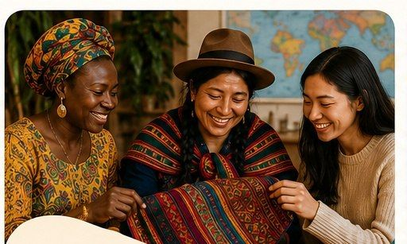
O que leva consigo da sua terra natal.
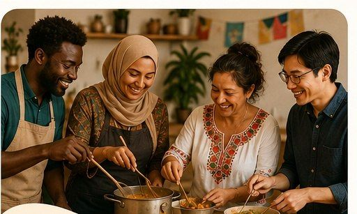
Receitas, celebrações e costumes que dão identidade.
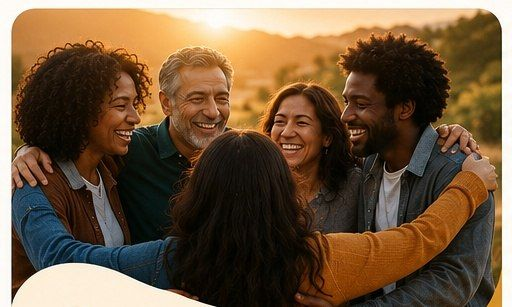
Relatos de superação, comunidade e novos começos.
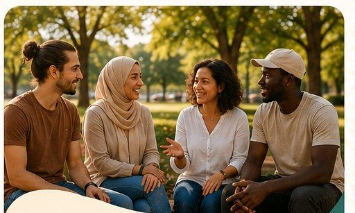
Encontros entre culturas no dia a dia.
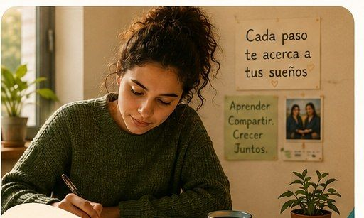
O que aprendeu no seu próprio processo de integração.

No idioma em que se sinta mais confortável.
Cuidamos da forma sem mudar a sua voz.
No blogue da Ubuntu Canarias, com o seu nome.
Com milhares de leitores nas nossas redes.
Escolha o tema que mais se pareça com a sua história. Estas são apenas algumas ideias.
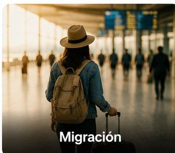
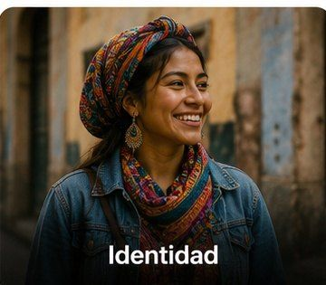
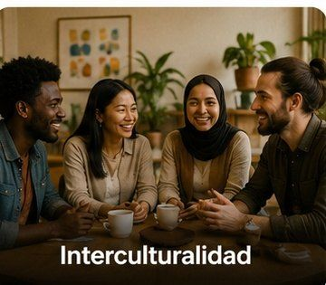
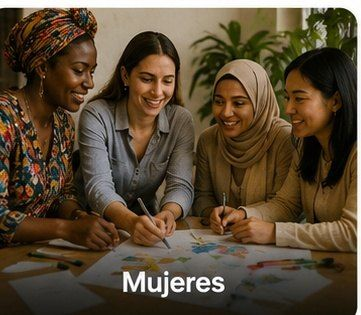
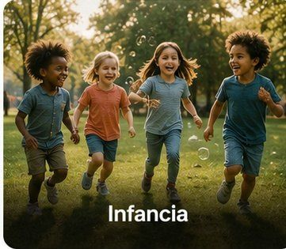
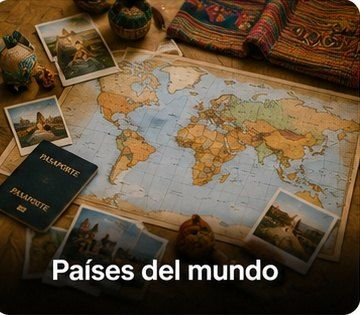
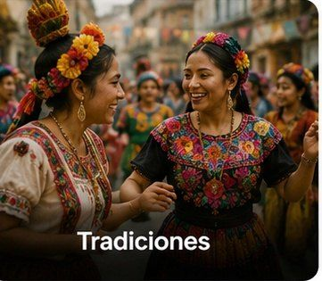
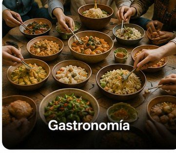
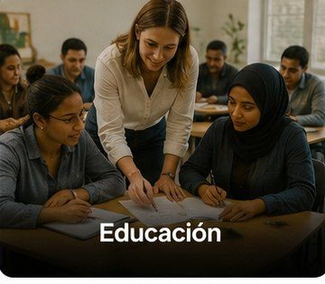
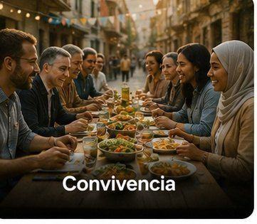

A sua história pode dar esperança a alguém que começa o mesmo caminho.

A sua cultura e experiência enriquecem quem a lê.

Cada história ajuda a construir um olhar mais aberto sobre a migração.
Não está sozinho ou sozinha: cuidamos da sua história consigo, passo a passo, até estar pronta para ser publicada.

Com as suas próprias palavras, no idioma em que se sinta mais confortável.
A nossa equipa revê cada detalhe consigo, cuidando da sua voz.
Publicamos a sua história no blogue e partilhamo-la com milhares de leitores.

As pessoas migrantes não recebem apenas apoio. Também geram conhecimento, cultura e esperança.
Quero escreverTambém pode contactar-nos por correio eletrónico ou visitar o nosso sítio. Responderemos com o mesmo carinho.
Ubuntu Canarias · Acolhimento e Integração